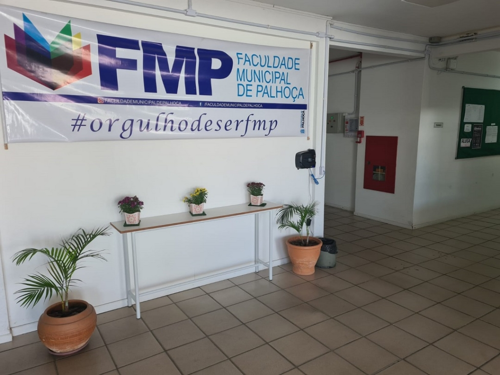

O que é a FMP?
A Faculdade Municipal de Palhoça (FMP) é uma instituição de ensino superior localizada na cidade de Palhoça, em Santa Catarina. Ela oferece uma variedade de cursos em diferentes áreas do conhecimento, incluindo Análise e Desenvolvimento de Sistemas, Administração, Processos Gerenciais e Pedagogia. Nela, você encontra uma variedade de pessoas com uma variedade de interesses e ideias, sendo elas do ramo ou não.
